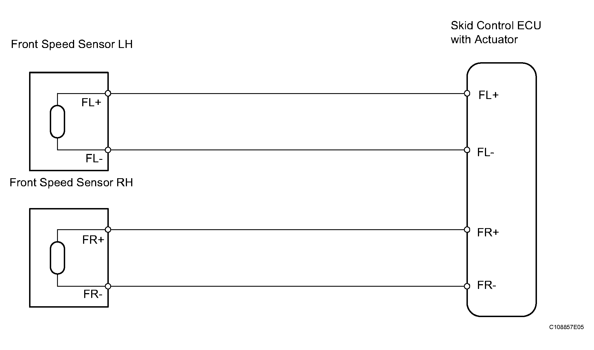

DTC C0200/31 Right Front Wheel Speed Sensor Signal Malfunction; DTC C0205/32 Left Front Wheel Speed Sensor Signal Malfunction; DTC C1235/35 Foreign Object is Attached on Tip of Front Speed Sensor RH; DTC C1236/36 Foreign Object is Attached on Tip of Front Speed Sensor LH; DTC C1271/71 Low Output Signal of Front Speed Sensor RH (Test Mode DTC); DTC C1272/72 Low Output Signal of Front Speed Sensor LH (Test Mode DTC); DTC C1275/75 Abnormal Change in Output Signal of Front Speed Sensor RH (Test Mode DTC); DTC C1276/76 Abnormal Change in Output Signal of Front Speed Sensor LH (Test Mode DTC): Wiring Diagram

Courtesy of © TOYOTA, LICENSE AGREEMENT TMS1002